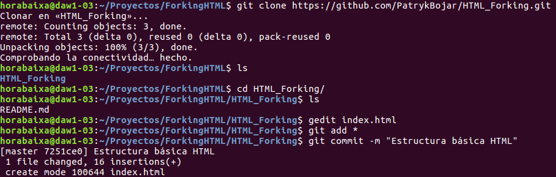

La palabra fork se traduce al castellano, dentro del contexto que nos ocupa, como bifurcación. Cuando hacemos un fork de un repositorio, se hace una copia exacta en crudo del repositorio original que podemos utilizar como un repositorio git cualquiera. Después de hacer fork tendremos dos repositorios git idénticos pero con distinta URL. Justo después de hacer el fork, estos dos repositorios tienen exactamente la misma historia, son una copia idéntica. Finalizado el proceso, tendremos dos repositorios independientes que pueden cada uno evolucionar de forma totalmente autónoma. De hecho, los cambios que se hacen el repositorio original NO se transmiten automáticamente a la copia. Esto tampoco ocurre a la inversa: las modificaciones que se hagan en la copia (fork) NO se transmiten automáticamente al repositorio original.
El usuario Patryk va a github, accede con su usuario y contraseña y abre la URL del repositorio originalEn la página del repositorio, gusaljr, Teowv, ionoproxy hacen clic sobre el botón fork. Al hacer clic, Github va a crear un nuevo repositorio en su cuenta que es una copia del repositorio
Cuando el proceso de forking termina (puede durar varios minutos si el repositorio que estamos bifurcando es muy grande)acaba en la siguiente pantalla:
Este repositorio es una copia del original (https://github.com/aprendegit/fork). Si comparáis la historia de los dos repositorios veréis que es idéntica.
Este nuevo repositorio (https://github.com/PatrykBojar/HTML_Forking) es el que nuestro usuario gusaljr va a utilizar para trabajar y, cuando termine, enviarnos sus modificaciones.
La primera tarea que el usuario gusaljr va a hacer como colaborador nuestro es modificar la página de inicio añadiendo nuestro logo. Para ello, clonará su fork y trabajará sobre él como si fuese un repositorio normal.
Dado que el fork está en su cuenta, él es el propietario y como tal podrá hacer push sin ningún problema. Recordad que al repositorio original (https://github.com/PatrykBojar/HTML_Forking) este usuario no puede hacer push.
Al cabo de unos minutos,gusaljr ha clonado su repositorio (https://github.com/PatrykBojar/HTML_Forking)) en su máquina, ha añadido el logo y ha hecho un push a su fork:
A la vez que gusaljr ha avanzado con su tarea, nuestro primer usuario (Teowv) y administrador del repositorio original (https://github.com/PatrykBojar/HTML_Forking), ha continuado también trabajando. A la vez que el usuario gusaljr ha cambiado la página de inicio,gusaljr ha añadido un nuevo campo a la clase Post de nuestro blog. Cuando aalbagarcia ha acabado su trabajo, lo sube al repositorio original (https://github.com/gusaljr/HTML_Forking) haciendo un push.